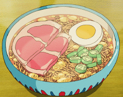

Cheap, easy and delicious instant ramen
Ramen, the quick and easy meal that is loved by many across the globe. It has saved my life when I have been tight on cash or just wanted to whip up a simple yet delicious meal under time constraints. I will now share with you my secrets on how to make dried noodles and soup stock taste like heaven.
Ingredients
- A packet of GOOD ramen.(I would strongly recommend Nongshim's Shin ramen. You can find it in almost every grocery store and even some gas station.)
- Water according to the amount stated on the back of your ramen packet.(Spring or filtered water would be better than using tap water)
- 2 slices of guilt inducing bacon
- 2 slices of shitake mushrooms
- 1 egg (free range eggs are recommended)
- A handful of spring onions
Optional Ingredients
A slice of processed cheese- This is added at the very end after your ramen is done cooking and stirred into your ramen to give it a creamier flavor. My wife loves this but I prefer to do without.
Pieces of ham- A much healthier substitute to bacon strips.
Pieces of leftover fried chicken- Shred the meat by hand and add into ramen while cooking.
Frozen vegetables- You can use spinach, corn, carrot, peas, or even broccoli. Add right into the soup stock after it boils.
Silken tofu- For vegans. Sometimes I add both tofu and bacon, the tofu goes really well with the soup stock. Can also replace the egg.
Kamaboko fish cake- This is usually more for presentation purposes but it tastes pretty good too.
Onion and Garlic powder- Add straight into soup stock for a tastier ramen soup.
Oyster sauce- If you find that your soup is bland, adding some oyster sauce would make the soup stock taste a lot more flavorful than just adding more salt.
Directions
-

- Cut the bacon strips into bite size pieces, cut the spring onions into small pieces.
- Turn on the stovetop to medium high heat, spread out the slices of bacon at the bottom of the pan.
- Let the bacon steam and cook in its own juices. When the bacon starts releasing its fat at the bottom of the pan, pour water into the pan and allow it to boil. Remember that the bacon will continue to cook throughout so be careful not to overcook it. We just want the grease from the bacon to help flavor the ramen stock.
- While the water is heating up, add in the packets of soup stock and dried vegetables. Add in the shitake mushroom as well.
- After the water starts to boil, add in your ramen noodle packet and let it rehydrate in the boiling stock.
- When the ramen noodle starts to loosen up, crack the egg directly into the pot to poach on top of the ramen noodles. Put a lid on and continue to cook for 2 minutes.
- Turn off the heat. Remove the lid and add the chopped spring onions to the pot. The egg should be softly poached with the yolk still runny. You can choose to break the yolk with a fork and stir it into the stock for a creamier ramen or move the egg to the bottom with the noodles covering it if you prefer your egg well done. The heat of the noodles and soup will continue to cook the egg.
- Serve! I like to eat straight from the pot so that I do not have to do more dishes but you can always pour the contents of the pot into a bowl.